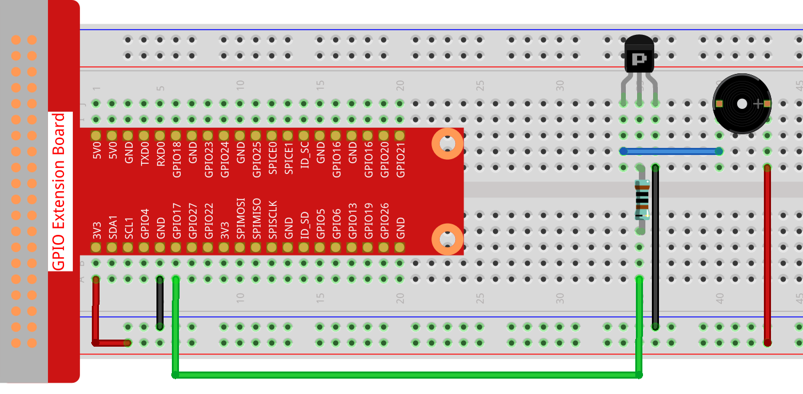

Note
Hello, welcome to the SunFounder Raspberry Pi & Arduino & ESP32 Enthusiasts Community on Facebook! Dive deeper into Raspberry Pi, Arduino, and ESP32 with fellow enthusiasts.
Why Join?
Expert Support: Solve post-sale issues and technical challenges with help from our community and team.
Learn & Share: Exchange tips and tutorials to enhance your skills.
Exclusive Previews: Get early access to new product announcements and sneak peeks.
Special Discounts: Enjoy exclusive discounts on our newest products.
Festive Promotions and Giveaways: Take part in giveaways and holiday promotions.
👉 Ready to explore and create with us? Click [here] and join today!
1.2.1 Active Buzzer
Introduction
In this lesson, we will learn how to drive an active buzzer to beep with a PNP transistor.
Components

Principle
Buzzer
As a type of electronic buzzer with an integrated structure, buzzers, which are supplied by DC power, are widely used in computers, printers, photocopiers, alarms, electronic toys, automotive electronic devices, telephones, timers and other electronic products or voice devices. Buzzers can be categorized as active and passive ones (see the following picture). Turn the buzzer so that its pins are facing up, and the buzzer with a green circuit board is a passive buzzer, while the one enclosed with a black tape is an active one.
The difference between an active buzzer and a passive buzzer:

The difference between an active buzzer and a passive buzzer is: An active buzzer has a built-in oscillating source, so it will make sounds when electrified. But a passive buzzer does not have such source, so it will not beep if DC signals are used; instead, you need to use square waves whose frequency is between 2K and 5K to drive it. The active buzzer is often more expensive than the passive one because of multiple built-in oscillating circuits.
The following is the electrical symbol of a buzzer. It has two pins with positive and negative poles. With a + in the surface represents the anode and the other is the cathode.

You can check the pins of the buzzer, the longer one is the anode and the shorter one is the cathode. Please don’t mix them up when connecting, otherwise the buzzer will not make sound.
Schematic Diagram
In this experiment, an active buzzer, a PNP transistor and a 1k resistor are used between the base of the transistor and GPIO to protect the transistor. When the GPIO17 of Raspberry Pi output is supplied with low level (0V) by programming, the transistor will conduct because of current saturation and the buzzer will make sounds. But when high level is supplied to the IO of Raspberry Pi, the transistor will be cut off and the buzzer will not make sounds.

Experimental Procedures
Step 1: Build the circuit. (Pay attention to poles of the buzzer: The one with + label is the positive pole and the other is the negative.)
{kind=link}
For C Language Users
Step 2: Open the code file.
cd ~/davinci-kit-for-raspberry-pi/c/1.2.1/
Step 3: Compile the code.
gcc 1.2.1_ActiveBuzzer.c -lwiringPi
Step 4: Run the executable file above.
sudo ./a.out
The code run, the buzzer beeps.
Note
If it does not work after running, or there is an error prompt: "wiringPi.h: No such file or directory", please refer to C code is not working?.
Code
#include <wiringPi.h>
#include <stdio.h>
#define BeepPin 0
int main(void){
if(wiringPiSetup() == -1){ //when initialize wiring failed, print messageto screen
printf("setup wiringPi failed !");
return 1;
}
pinMode(BeepPin, OUTPUT); //set GPIO0 output
while(1){
//beep on
printf("Buzzer on\n");
digitalWrite(BeepPin, LOW);
delay(100);
printf("Buzzer off\n");
//beep off
digitalWrite(BeepPin, HIGH);
delay(100);
}
return 0;
}
Code Explanation
digitalWrite(BeepPin, LOW);
We use an active buzzer in this experiment, so it will make sound automatically when connecting to the direct current. This sketch is to set the I/O port as low level (0V), thus to manage the transistor and make the buzzer beep.
digitalWrite(BeepPin, HIGH);
To set the I/O port as high level(3.3V), thus the transistor is not energized and the buzzer doesn’t beep.
For Python Language Users
Step 2: Open the code file.
cd ~/davinci-kit-for-raspberry-pi/python
Step 3: Run.
sudo python3 1.2.1_ActiveBuzzer.py
The code run, the buzzer beeps.
Code
Note
You can Modify/Reset/Copy/Run/Stop the code below. But before that, you need to go to source code path like davinci-kit-for-raspberry-pi/python.
import RPi.GPIO as GPIO
import time
# Set #17 as buzzer pin
BeepPin = 17
def setup():
# Set the GPIO modes to BCM Numbering
GPIO.setmode(GPIO.BCM)
# Set LedPin's mode to output,
# and initial level to High(3.3v)
GPIO.setup(BeepPin, GPIO.OUT, initial=GPIO.HIGH)
def main():
while True:
# Buzzer on (Beep)
print ('Buzzer On')
GPIO.output(BeepPin, GPIO.LOW)
time.sleep(0.1)
# Buzzer off
print ('Buzzer Off')
GPIO.output(BeepPin, GPIO.HIGH)
time.sleep(0.1)
def destroy():
# Turn off buzzer
GPIO.output(BeepPin, GPIO.HIGH)
# Release resource
GPIO.cleanup()
# If run this script directly, do:
if __name__ == '__main__':
setup()
try:
main()
# When 'Ctrl+C' is pressed, the program
# destroy() will be executed.
except KeyboardInterrupt:
destroy()
Code Explanation
GPIO.output(BeepPin, GPIO.LOW)
Set the buzzer pin as low level to make the buzzer beep.
time.sleep(0.1)
Wait for 0.1 second. Change the switching frequency by changing this parameter.
Note
Not the sound frequency. Active Buzzer cannot change sound frequency.
GPIO.output(BeepPin, GPIO.HIGH)
Close the buzzer.
Phenomenon Picture